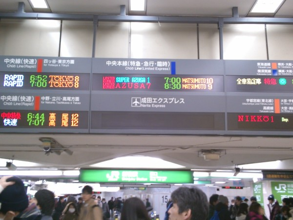
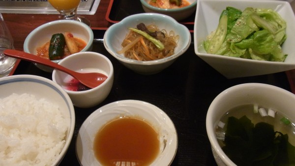
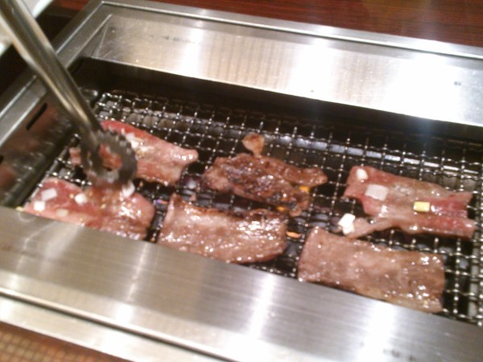
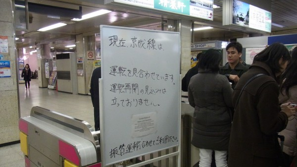

Recruit Programming Contest 1日目(2/9)
前日に記録的な大雪が降って交通網が麻痺したため、成田空港にたどり着けるか不安なままとりあえず新宿に向かう。
6:30頃に新宿に到着。 案の定、京成、成田エクスプレス、シャトルバスとすべて止まっており、9:30の集合時間どころか11:30の出発時刻にも間に合わない雰囲気。

なので、リクルートの担当者に電話してみる。 しかし向こうでも対策が決まっていないようで、なんか決まったら連絡するとのことだったので、とりあえず喫茶店に移動して時間をつぶす。
7:30くらいになって、スカイライナーが復活するという噂があるので上野に行ってくださいという旨の電話を受ける。 新宿に向かっていた@shioshiotaさんと合流して上野へ。 Twitterを見ていると、関西勢は空路で成田へ向かったらしい。陸路は全滅しているのに空路からは成田空港に出入りできるようである。すごくコーナーケースっぽい。
京成上野駅に着いたところで、どうも事態は改善していない雰囲気である。まあそりゃそうだ。 関東のコンテスト参加者は1人を除いて全員が上野駅に集まった。
近くの喫茶店で待つように指示される。関西勢が成田に着いたとツイートしていて、一体この後どうするんだろう……とか思う。
昼近くになってから、回復の見込みが立たないし昼食にしようということで、近くの叙々苑に連れていかれる。カネパワーを感じる。Twitterを見ると関西勢はお湯で戻すおにぎりなる謎の物体を食べていて、微妙に申し訳なさを感じる。
 
食事の後もなかなか調整がつかないらしく、15:00くらいまで居座り続ける。その間、東北からの参加者である@taka_keyさんがなぜか成田にいるという情報が入る(どうも他のスタッフと合流できて、タクシーで入ることができたらしい)。
問題になっているのは
- 鉄道が回復しつつあるという情報はあるが、かなり本数が少ない
- 仮に成田まで行けたところで、本当に飛行機が飛ぶのか疑わしい
- 飛行機が飛ばない場合、成田から出られなくなる可能性が高いのでやばい
というところだが、叙々苑を出る頃に、搭乗予定だったボストン行きの飛行機が出るという情報が入る。え、マジで？ 対応を協議する間、近くのビアホールで待機する。
1時間くらいしてから、次のような情報と戦略が通達される。
- 京成アクセス特急は、運転見合わせと言いつつ数十分に1本の割合で運行していて、並んでいると乗れる(なんじゃそりゃ)
- とりあえず列に並んでおいて、同時並行でこの後の飛行機へ振替の手配を行う
- 成田で詰むとやばいので、電車に乗る前に振替が成功しなかった場合は諦めて東京で宿泊する
この通りにアクセス特急に並ぶ。

関西勢は着々と出発の準備をしている様子で羨ましい。
結局、飛行機の振替がうまくいかず、八重洲で宿泊することになった。
ホテルは結構いい感じのとこで、カネパワーを感じる。
スタッフの方々と近くの居酒屋で夕食を取る。 翌日2/10の飛行機へ振替が成功したという話を聞く。しかも、なんとビジネスクラスになるらしい。リクルートのカネパワーにはなんとなく慣れてきていたが、さすがに動揺する。
居酒屋ではプログラミングコンテストのスポンサーをやる理由とか、競技と実務のコードの違いとか、オーダーを見積もる力が実務にどう活きるかみたいな話をした。楽しかった。
AtCoder Regular Contestに参加しようかと思っていたものの、ホテルに帰った時点で22:00だったので、諦めてシャワーを浴びて寝た。